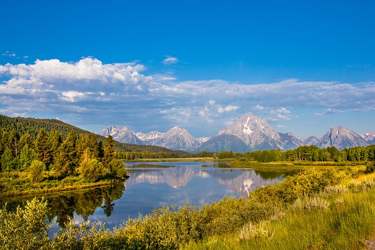
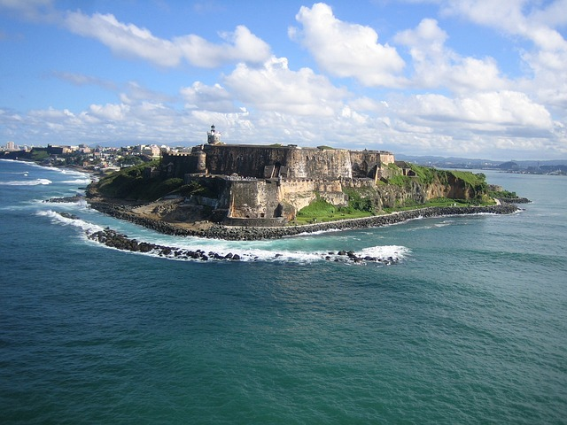
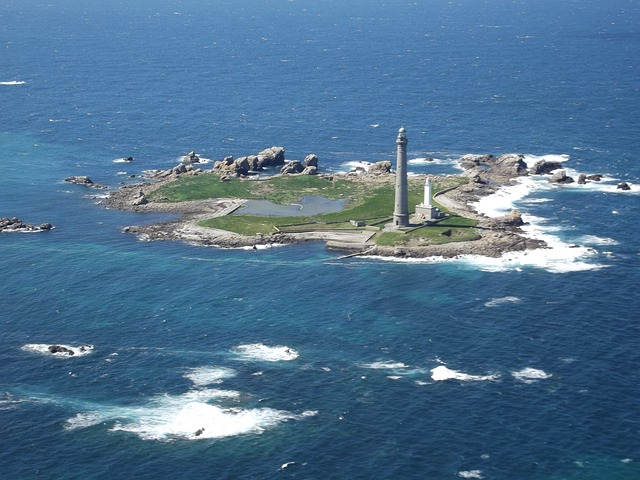
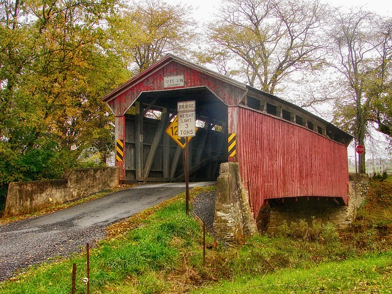

A state of the United States is one of the 50 constituent entities that shares its sovereignty with the federal government. Americans are citizens of both the federal republic and of the state in which they reside, due to the shared sovereignty between each state and the federal government. Kentucky, Massachusetts, Pennsylvania, and Virginia use the term commonwealth rather than state in their full official names. States are the primary subdivisions of the United States. The United States of America is a federal republic consisting of 50 states, a federal district, five major territories, and various minor islands. Both the states and the United States are each sovereign jurisdiction. The United States has control over fourteen territories. Five of them, American Samoa, Guam, the Northern Mariana Islands, Puerto Rico, and the U.S. Virgin Islands have a permanent, nonmilitary population, while. nine of them do not. Except for Navassa Island, Puerto Rico, and the U.S. Virgin Islands, which are located in the Caribbean, all territories are in the Pacific Ocean. One territory, Palmyra Atoll, is considered to be incorporated, meaning the full body of the Constitution has been applied to it; the other territories are unincorporated, meaning the Constitution does not fully apply to them. The four other territories are organized, meaning an organic act has been enacted by Congress. The largest state by population is California, with a population of 39,538,223 people, while the smallest is Wyoming, with a population of 576,851 people; the federal district has a larger population 689,545 than both Wyoming and Vermont.
   